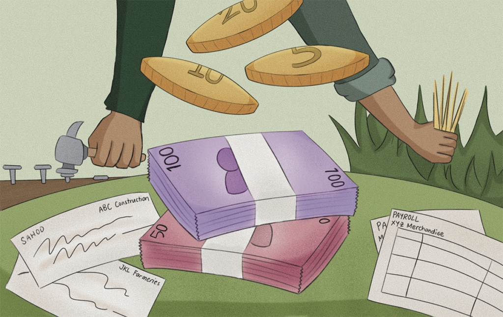
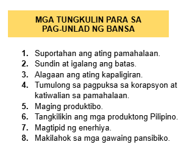
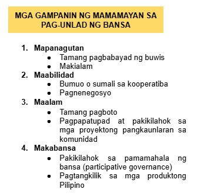
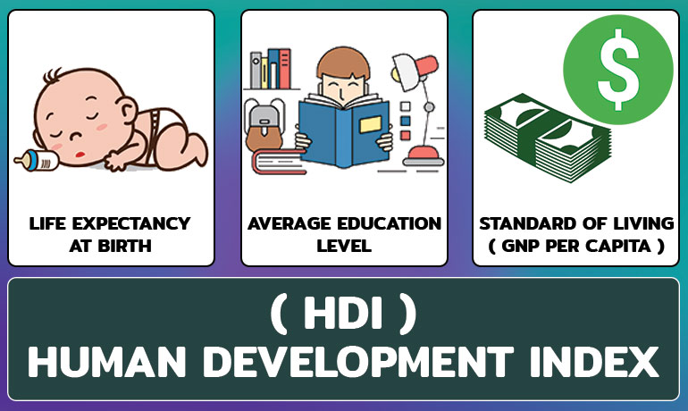
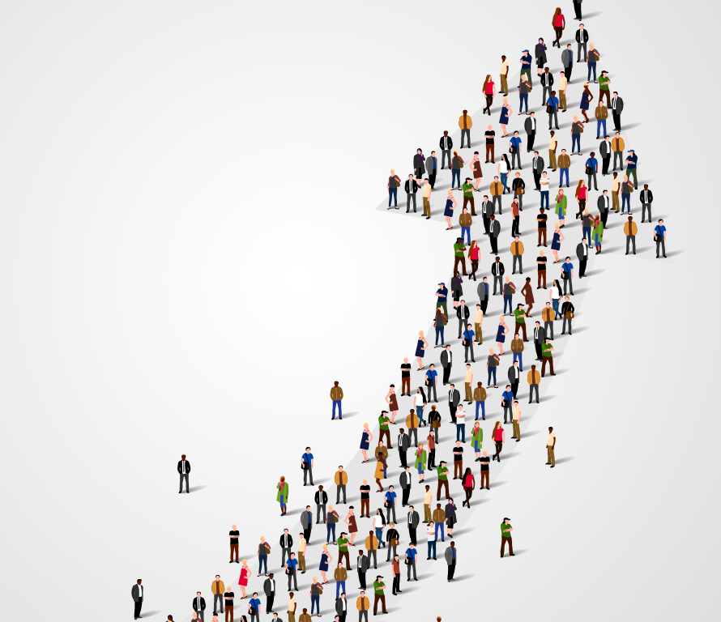

Lesson 1
Pambansang Kaunlaran
Isang estado ng bansa kung saan tinatamasa ng mga tao mula sa pinakamababang uri ng mamamayan ang nakakamanghang pagbabago sa ekonomiya at pamumuhay.
Lesson 2
Mga Konsepto ng Pambansang Kaunlaran
- Pagbabago
- Pag-unlad
- Pagsulong
- Ebolusyon
Pagbabago
- Paraan upang maging iba o naiiba
- Proseso ng pag-iiba sa lipunan at ekonomiya
Pag-unlad
- Pagbabago mula sa mababa tungo sa mataas na antas ng pamumuhay
- Pag-angat o paglago ng pamumuhay
Pag-unlad
- Pagbabago mula sa mababa tungo sa mataas na antas ng pamumuhay
- Pag-angat, pagsulong, o paglago sa pangkalahatang aspeto ng pamumuhay
- Isang progresibo at aktibong proseso at ang pagsulong ay produkto nito (FAJARDO) Ang kaunlaran ay matatamo lamang kung mapauunlad ang yaman ng buhay ng mga tao kaysa sa yaman ng ekonomiya nito (AMARTYA SEN)
Ebolusyon
- Pag-usad tungo sa iyong layunin o goal
- Pagpapaunlad ng kakayahan, kaalaman, at abilidad upang makasabay sa agos ng buhay
Lesson 3

Lesson 4
Mga Salik sa Pagsulong ng Ekonomiya
- Likas na Yaman
- Yamang-Tao
- Kapital
- Teknolohiya at Inobasyon

Lesson 5

Palatandaan ng Pag-unlad
- Makatwiran at dinamikong kaayusan ng lipunan
- Kasaganaan at kasarinlan
- Kalayaan sa kahirapan
- Sapat na serbisyong panlipunan
- Katarungang panlipunan
Lesson 6


Lesson 7
Sukatan ng Kaunlaran ng Bansa
- Ginagamit ang Human Development Index (HDI)
- Human Development Index
- Pangkalahatang sukat ng kalusugan, edukasyon, at pamumuhay ng isang bansa.

Lesson 8
Antas ng Kaunlaran ng Bansa
- Developed Economies – mataas na GDP at HDI
- Developing Economies – may industriyang pinauunlad
- Underdeveloped Economies – mababang GDP at industriyalisasyon
